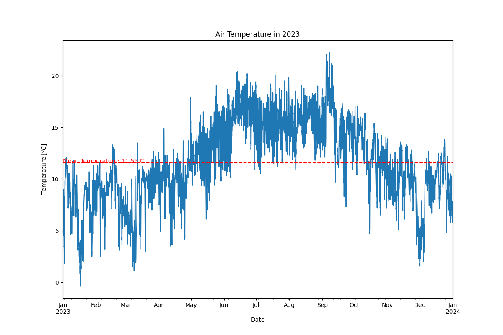

April 25, 2021
Problem Statement: I must predict the probability for each of 7 defect categories: Pastry, Z_Scratch, K_Scatch, Stains, Dirtiness, Bumps, Other_Faults.
Context: The aim is to develop a predictive model that can accurately forecast defect using relevant parameters. The model will be valuable for factories.
Objective: Implement a Gradient Boost Classification, a regularized linear regression technique, to construct a predictive model capable of accurately forecasting the types of defect based on the identified significant variables.
Analysis: Determine the relative contribution of each parameter to the model's prediction of Pastry, Z_Scratch, K_Scatch, Stains, Dirtiness, Bumps, Other_Faults. Additionally, we will rigorously evaluate the model's performance using the accuracy.

This plot above visualizes the ROC AUC Scores for Classification Models.

This plot above illustrates the classification report showing the main classification metrics such as precision, recall and f1-score.
April 10, 2021
Problem Statement: Understand the factors affecting air temperature and build a predictive model to forecast air temperature based on weather parameters.
Context: The aim is to develop a predictive model that can accurately forecast air temperature using relevant weather parameters. The model will be valuable for weather forecasting agencies, agricultural planning, and various industries dependent on weather conditions.
Objective: Implement Ridge Regression, a regularized linear regression technique, to construct a predictive model capable of accurately forecasting air temperature based on the identified significant weather variables. This model selection aims to achieve optimal performance while mitigating overfitting, a common challenge in machine learning.
Analysis: Determine the relative contribution of each weather parameter to the model's prediction of air temperature. Additionally, we will rigorously evaluate the model's performance using various statistical metrics such as mean squared error (MSE) and R-squared value.

This plot above visualizes the air temperature trends throughout the year 2023. The blue line represents the daily temperature variations, while the red dashed line indicates the mean temperature for the year. The plot helps to observe temperature fluctuations over time and highlights the average temperature level for the entire year.
This plot above illustrates the performance comparison of different regression models including Linear Regression, Ridge Regression, Lasso Regression, and Random Forest Regression. Each boxplot represents the distribution of Root Mean Squared Error (RMSE) scores obtained through cross-validation for a specific model. The lower the RMSE, the better the model's predictive performance. This analysis aids in selecting the most suitable regression model for the given dataset based on its predictive accuracy.
This plot above compares the target temperatures with the model temperatures over time. Each point represents a specific date, with the target temperatures indicated by one set of points and the model temperatures indicated by another set. The plot helps visualize the relationship between the observed and predicted temperatures, aiding in assessing the accuracy and performance of the model across different dates.
March 15, 2021
Problem Statement: understand the Target Customer for the marketing team to plan a strategy.
Context: the manager wants identify the most important shopping groups based on income, age, and the mall shopping score. He wants the ideal number of groups with a label for each.
Objective: divide the mall target market into approachable groups. Create subsets of a market based on demographics behavioural criteria to better understand the target for marketing activities.
Analysis: - Target group would be cluster 7 which has a high Spending Score and high Annual income.
- 57 percent of cluster 3 shoppers are women. We should look for ways to attract these customers using a marketing campaign targeting popular items in this cluster.
- Cluster 5 presents an interesting opportunity to market to the customers for sales event on popular items which has a high Spending Score and low Annual income.

This plot visualizes the bivariate clustering of annual income and spending score. The black stars represent the cluster centers obtained from the clustering algorithm. Each point on the scatter plot represents a data point, with the x-axis indicating annual income and the y-axis indicating spending score. The plot provides insights into the relationships and patterns present in the data regarding spending behavior and income levels.